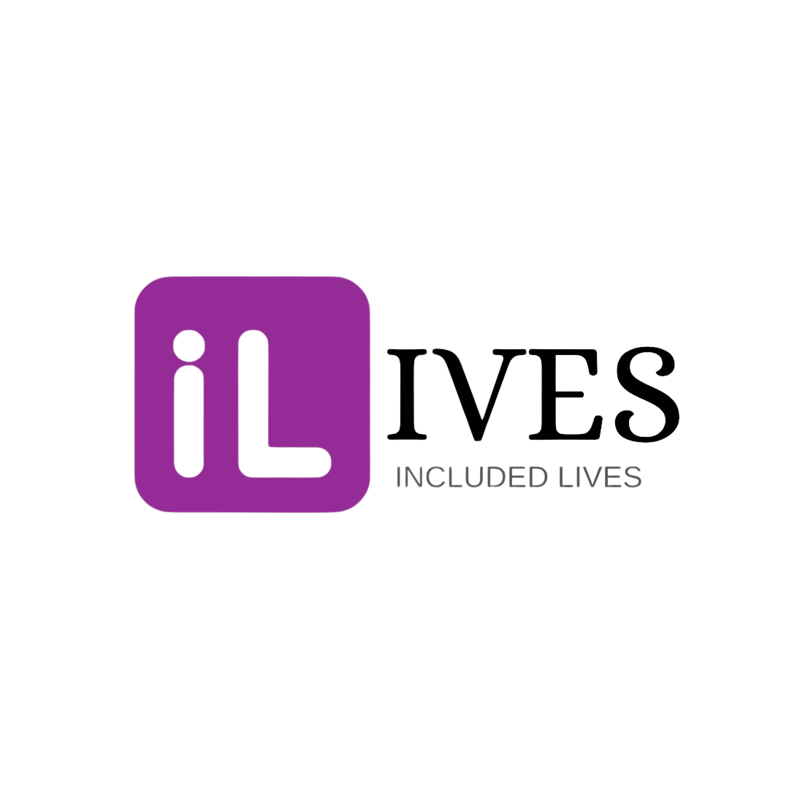

5
Vagas ativas

IVESOrganize suas vagas e acompanhe o que precisa da sua atenção.
Vagas ativas
Candidaturas aguardando
resposta
Entrevistas nesta semana
Há candidaturas sem atualização há 5 dias
1 solicitação de comunicação por escrito
Assistente de logística: recursos ainda não informados
| Vaga | Situação | Candidaturas | Próxima ação | |
|---|---|---|---|---|
| Assistente administrativo | Publicada | 15 | ||
| Auxiliar de expedição | Publicada | 8 | ||
| Assistente de logística | Rascunho | — | ||